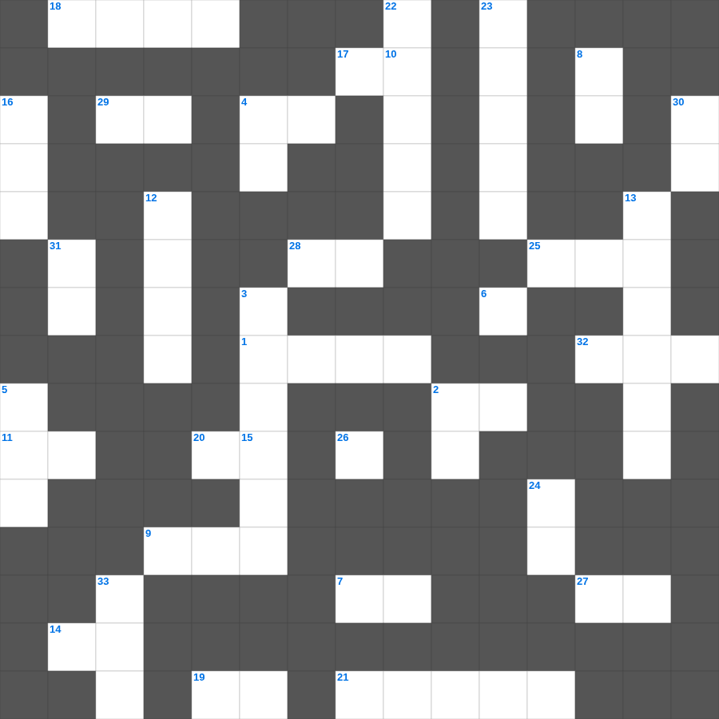

학개 & 스가랴 마스터 50
📌 서비스 정의
십자가로세로는 교회 주보와 주일학교에서 사용할 수 있는 성경 기반 가로세로 퍼즐 서비스입니다. 성경 인물, 사건, 핵심 구절을 바탕으로 제작되었습니다. 온라인 풀이 및 인쇄 기능을 제공합니다.
📖 학개란?
학개는 바벨론 포로 귀환 후 성전 재건을 미루던 백성들에게 성전 건축을 독려하며, 하나님의 영광이 다시 임할 것을 약속한 예언서입니다.
📚 학개의 주요 사건·주제
성전 재건 독려 · 백성들의 우선순위에 대한 경고 · 성전 영광 회복 약속 · 스룹바벨에 대한 격려 · 메시아적 약속(인장 비유)
오늘은 학개의 주요 내용을 담은 학개 성경 퀴즈 문제를 준비했습니다. 총 35개의 힌트가 있으며, 주일학교 교재나 성경공부 자료로 활용하기 좋습니다. 무료로 즐기는 학개 가로세로 퍼즐을 지금 바로 풀어보세요!

📝 가로 힌트
1. 사마리아 성의 기근이 풀릴 것을 예언한 네 사람의 신분
2. 히스기야가 성전을 정결케 한 후 드린 제사의 종류
4. 에돔에 대하여 이르시되 데만에 다시는 이것이 없느냐
6. 히스기야가 십일조와 예물을 쌓아두기 위해 만든 것
7. 바울이 안디옥에서 외식하는 이 사람을 면전에서 책망함
9. 네가 이것의 보금자리처럼 높이 지었을지라도 내가 거기서 너를 내리리라
11. 빌라도가 예수께 죄를 찾지 못하자 당시 갈릴리 관할이었던 이 왕에게 보냄
14. 우리가 진리를 아는 지식을 받은 후 짐짓 죄를 범한즉 다시 속죄하는 이것이 없고
15. 보혜사 성령이 오시면 그가 세상에 대하여 죄에 대하여 이것에 대하여 심판에 대하여 책망하시리라
17. 내가 이르되 슬프도소이다 주 여호와여 보소서 나는 이것이라 말할 줄을 알지 못하나이다
18. 이것들이 아침마다 새로우니 주의 이것이 크시도소이다
19. 르호보암을 공격하여 성전 보물을 빼앗아간 애굽 왕
20. 그의 이름은 여호와 우리의 이것이라 일컬음을 받으리라
21. 예레미야가 썼던 멍에의 상징적 의미
25. 에스더 3장에서 하만이 유다인 멸절을 꾀한 달
27. 요시야 왕 때 발견된 율법책에 대해 예언해 준 여선지자
28. 하나님이 교만한 자를 물리치시고 이것한 자에게 은혜를 주신다 하였느니라
29. 베드로가 불을 쬐고 있을 때 '너도 그 제자 중 하나가 아니냐' 물은 사람
32. 초막절에 외치신 말씀: 누구든지 이것하거든 내게로 와서 마시라
📝 세로 힌트
2. 제단을 쌓고 아침저녁으로 드린 것
3. 에스겔이 본 환상 중 '바퀴' 안에 있는 '바퀴'는 무엇의 상징인가
4. 이 예언의 말씀을 읽는 자와 듣는 자와 그 가운데에 기록한 것을 이것은 자는 복이 있나니
5. 히스기야를 위협했던 앗수르의 왕
8. 독이 든 국에 엘리사가 이것을 던져 해독함
10. 열왕기하의 전체 장수
12. 너희가 온 마음으로 나를 구하면 나를 찾을 것이요 나를 이것
13. 예수의 사역을 돕던 여인들 중 일곱 귀신이 나간 자
16. 성령을 우리에게 어떻게 부어 주셨나
22. 그러므로 형제들아 주께서 강림하시기까지 이것 참으라
23. 앗수르 왕이 이스라엘 사람들을 쫓아내고 이주시켜 만든 혼혈 민족
24. 누구든지 자기를 높이는 자는 낮아지고 자기를 이것 하는 자는 높아지리라
26. 복 있는 사람은 악인들의 무엇을 따르지 아니하나
30. 베드로전서 1장 7절에서 믿음의 시련을 통과한 결과로 얻는 세 가지: 칭찬, 영광, 이것
31. 예언은 언제든지 사람의 뜻으로 낸 것이 아니요 오직 성령의 이것하심을 받은 사람들이 하나님께 받아 말한 것임이라
33. 히스기야가 기도할 때 하나님이 보내신 선지자
🧩 이 퍼즐에서 배우는 내용
이 퍼즐은 학개 & 스가랴 마스터 50의 핵심 단어와 개념을 자연스럽게 복습할 수 있도록 구성되었습니다. 주일학교 수업이나 개인 성경공부에서 학습 내용을 점검하는 용도로 바로 활용할 수 있습니다.
🧑🏫 교회 교육 자료 활용
이 퍼즐은 주일학교 교재 추천 자료로 활용할 수 있고, 주일학교 주보에 넣기 좋은 분량으로 구성되어 있습니다. 수업용 주일학교 교안에 활동지로 붙이거나, 예배 후 복습용 주일학교 공과교재로 바로 사용할 수 있습니다.
🏷️ 키워드
학개 성경 퀴즈 문제, 학개, 십자가로세로, 성경퀴즈, 말씀퀴즈, 가로세로퍼즐, 주일학교 교재 추천, 주일학교 주보, 주일학교 교안, 주일학교 공과교재